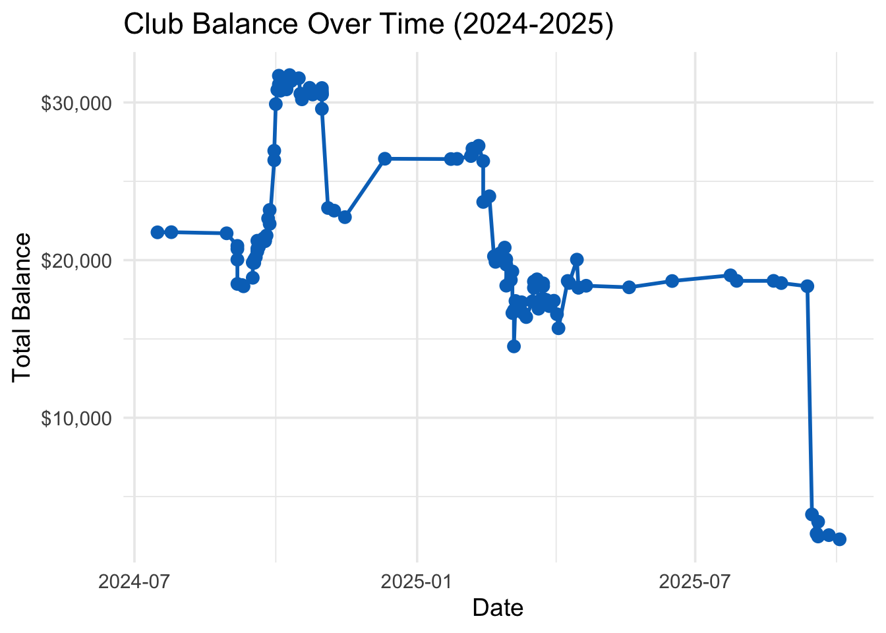
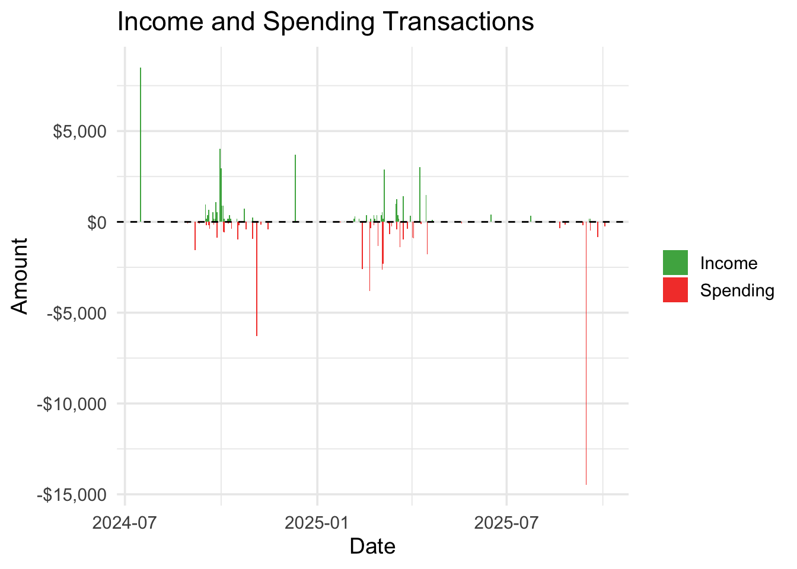
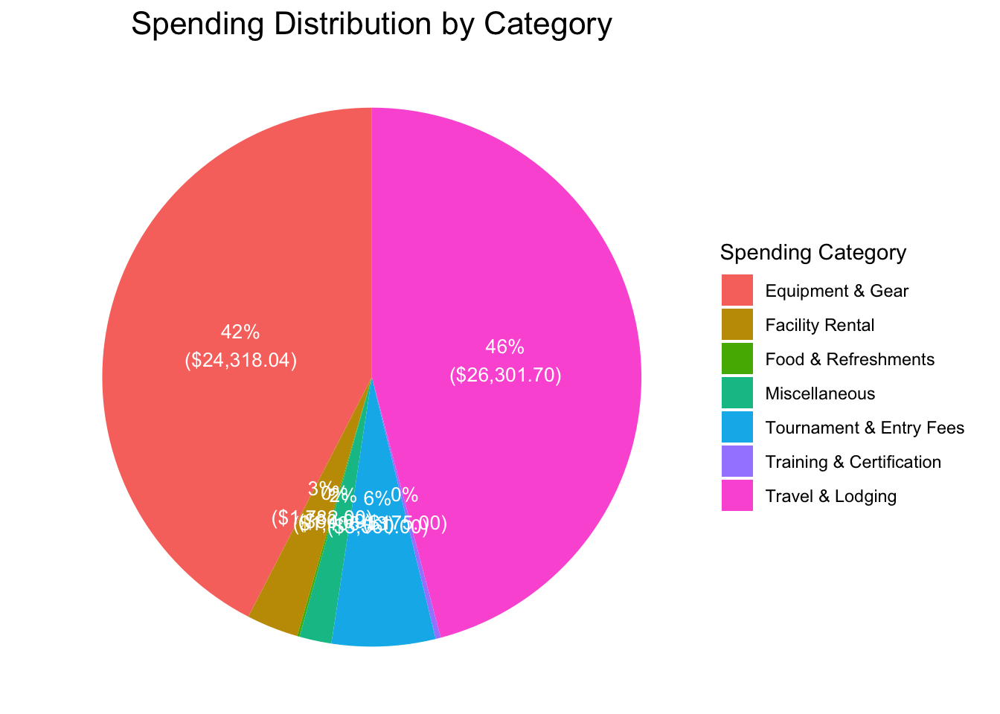

# Load necessary libraries
library(googlesheets4)
library(dplyr)
library(ggplot2)
library(lubridate)
library(scales)
library(stringr)
# --- Authenticate and Load Data from Google Sheets ---
# This allows the script to read a public sheet without requiring a login each time.
gs4_deauth()
# The URL of your Google Sheet
sheet_url <- "https://docs.google.com/spreadsheets/d/1QUmtSwyRjy1oQ6fqXGbksyNcvsLl_8wC0t6PSgTduJ8/edit?usp=sharing"
# Read the data from the first sheet of your Google Sheet
raw_data <- read_sheet(sheet_url, sheet = 1)
# Standardize column names for easier use
colnames(raw_data) <- make.names(colnames(raw_data), unique = TRUE)
cleaned_data <- raw_data %>%
# Ensure Date column is in Date format
mutate(Date = as.Date(Date)) %>%
# Rename columns for clarity. The data is already clean.
rename(Amount_Num = Amount, Total_Num = Total) %>%
# Add a transaction type column
mutate(Type = ifelse(Amount_Num >= 0, "Income", "Spending")) %>%
# Filter out any rows where key data is missing
filter(!is.na(Date) & !is.na(Amount_Num))
# Filter out the beginning balance for the income/spending chart
transactions <- cleaned_data %>%
filter(Vendor != "Beginning balance")
# --- Visualization 1: Balance Over Time ---
ggplot(cleaned_data, aes(x = Date, y = Total_Num)) +
geom_line(color = "#0073C2", size = 1) +
geom_point(color = "#0073C2", size = 3) +
scale_y_continuous(labels = dollar_format()) +
labs(
title = "Club Balance Over Time (2024-2025)",
x = "Date",
y = "Total Balance"
) +
theme_minimal(base_size = 14)
# --- Visualization 2: Income vs. Spending ---
ggplot(transactions, aes(x = Date, y = Amount_Num, fill = Type)) +
geom_col(position = "identity") +
scale_fill_manual(values = c("Income" = "#4CAF50", "Spending" = "#F44336")) +
scale_y_continuous(labels = dollar_format()) +
geom_hline(yintercept = 0, linetype = "dashed") +
labs(
title = "Income and Spending Transactions",
x = "Date",
y = "Amount"
) +
theme_minimal(base_size = 14) +
theme(legend.title = element_blank())
# --- Spending Pie Chart ---
# Step 1: Isolate and categorize spending data.
spending_categorized <- cleaned_data %>%
filter(Amount_Num < 0) %>%
mutate(
Category = case_when(
str_detect(Description, regex("trip|rooms|Inn|Suites|van|Hotel", ignore_case = TRUE)) ~ "Travel & Lodging",
str_detect(Description, regex("Balls|Uniforms|Merch", ignore_case = TRUE)) ~ "Equipment & Gear",
str_detect(Description, regex("Bagels|food", ignore_case = TRUE)) ~ "Food & Refreshments",
str_detect(Description, regex("Entry Fee|registration|Championship", ignore_case = TRUE)) ~ "Tournament & Entry Fees",
str_detect(Description, regex("Certs|CPRO", ignore_case = TRUE)) ~ "Training & Certification",
str_detect(Description, regex("Indoor Courts", ignore_case = TRUE)) ~ "Facility Rental",
TRUE ~ "Miscellaneous"
),
Spending = abs(Amount_Num)
)
# Step 2: Summarize data for the pie chart.
spending_summary <- spending_categorized %>%
group_by(Category) %>%
summarise(TotalSpending = sum(Spending)) %>%
mutate(Percentage = TotalSpending / sum(TotalSpending) * 100)
# Step 3: Create the pie chart.
ggplot(spending_summary, aes(x = "", y = TotalSpending, fill = Category)) +
geom_bar(stat = "identity", width = 1) +
coord_polar("y", start = 0) +
geom_text(aes(label = paste0(round(Percentage), "%\n", "(", dollar(TotalSpending), ")")),
position = position_stack(vjust = 0.5),
color = "white",
size = 3.5) +
labs(
title = "Spending Distribution by Category",
fill = "Spending Category"
) +
theme_void() +
theme(plot.title = element_text(hjust = 0.5, size = 16))